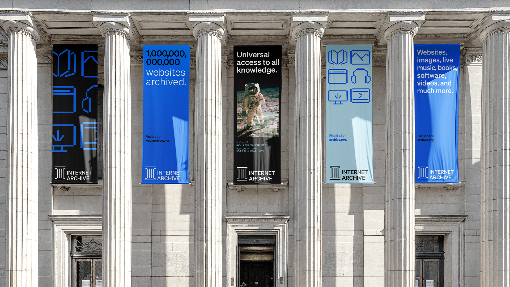
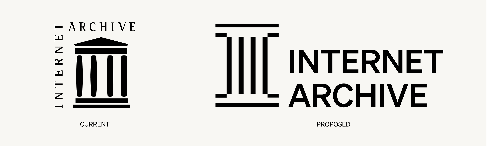
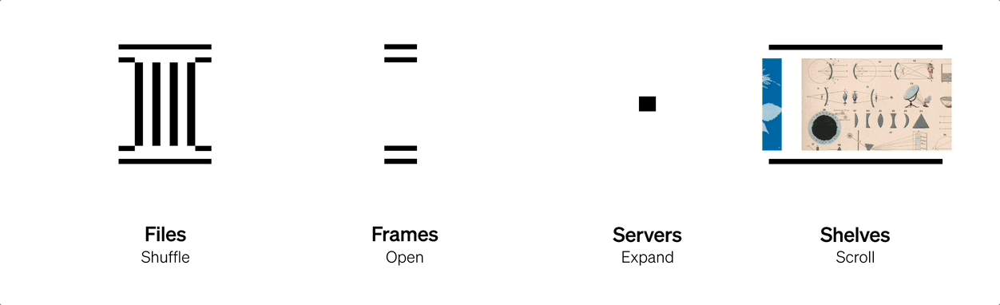
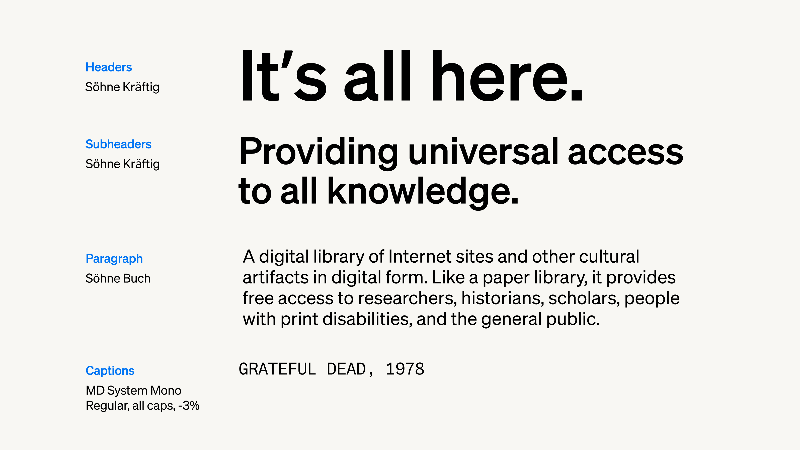
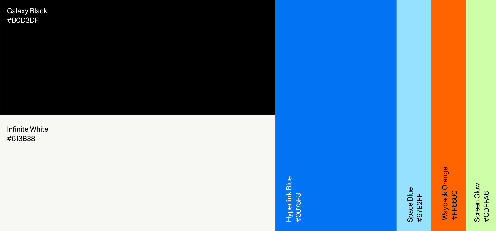
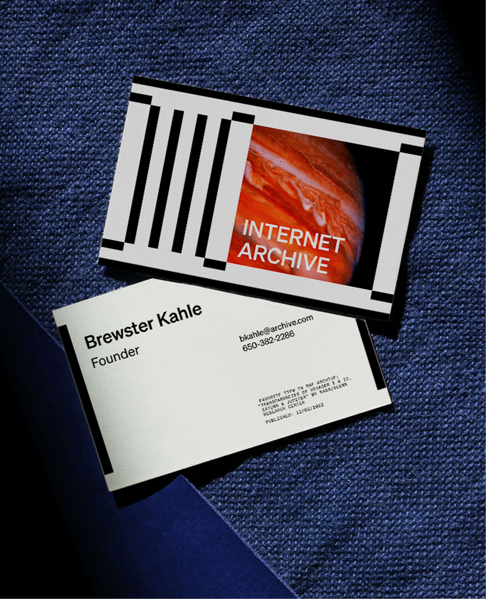
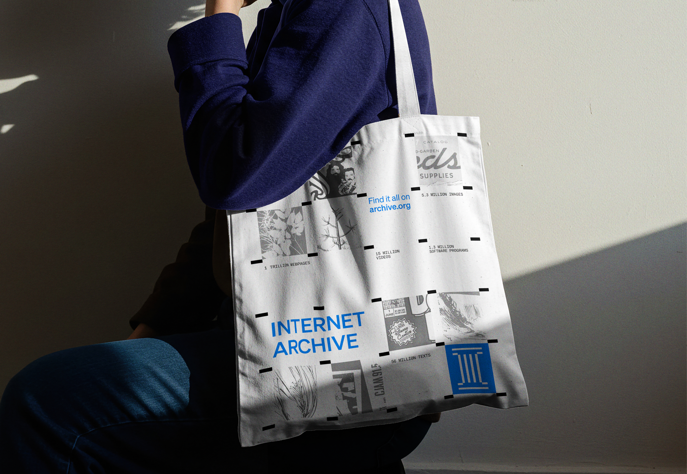
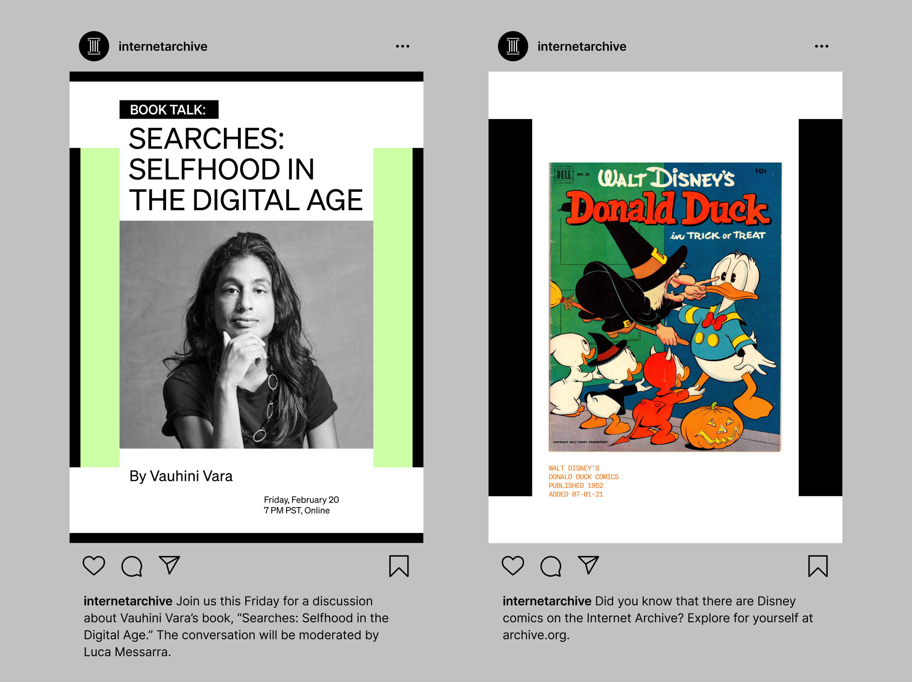

An expansive, enduring identity for the Internet Archive’s growing impact.
For information seekers and internet explorers who want dependable access to a record of human culture and knowledge, the Internet Archive is a digital repository of the web and other ephemeral media. It offers diverse collections, free public access, and a culture of community-driven preservation at global scale. For a brand that exists in a primarily digital sphere, this rebrand creates a more modular, dynamic system that captures attention through motion, socials, and out-of-home marketing in San Francisco, the home of the archive.
Creating a modular system that echoes both the physical and digital homes of the Internet Archive.
The logo draws from the 4 column building that the Internet Archive’s headquarters are housed in. Inside this old church are hundreds of active servers that host the archive. The modular logo creates a flexible system that covers traditional library shelves, frames, and internet servers. The logo’s grid also extends to icons that cover all of the archive’s offerings.




Branded touchpoints connect the archive’s headquarters, digital presence, and its home city of San Francisco.



